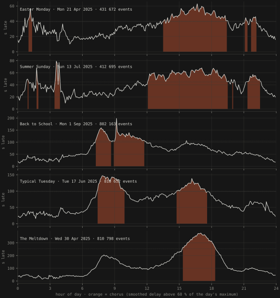

Sonification · Prague Integrated Transport · five days · Web Audio, no samples
Delayed All the Time. On Time, Occasionally.
Five real days of Prague public transport, played as disco tracks by the transport system itself. The metro is the kick drum because it is the most reliable pulse in the city. The buses are the chords, and they go out of tune exactly as far as they run late. When the city stops keeping up, the track lifts into the chorus.
- source period
- 121 M stop events 15 March – 8 September 2025 · Golemio / PID
- one day
- 288 beats 5-minute windows · 116 BPM · 24 h ≈ 2.5 min
- keys
- lydian → phrygian chosen by the day's mean delay
- samples used
- 0 every sound synthesised in the browser
This is the companion piece to a master's thesis on delay persistence in the Prague network, and it started as a way of hearing the thing the thesis was about. Delays are not noise. They are a slowly moving state you can watch; the morning peak builds, holds, and lets go. Statistically it is an autoregression whose coefficients sum to 0.73:
A shock to the delay at one moment is still three-quarters there in the next. Musically it is a build-up, a chorus and a breakdown, and the ear hears it before the table does1.
The player is one self-contained HTML file: no server, no build step, no external resources, all audio synthesised live with the Web Audio API from five days of aggregated stop-time data embedded verbatim. No raw records are redistributed; the aggregates are a derived work of Golemio's open data and say so2.
Every musical decision comes from the data
Nothing is random. One day is 288 five-minute windows, so one day is 288 beats; at 116 BPM twenty-four hours take about two and a half minutes. Each transport mode is an instrument, and each instrument plays what its mode did in that window2.
| element | data source |
|---|---|
| kick drum + bass | metro stop events. Average delay 7 s on a typical weekday, the most reliable pulse in the city. When the metro closes at night the beat literally stops, and the first morning train is the drop. |
| hi-hats + guitar plucks | tram stop events |
| chord stabs | bus stop events, 557 000 a day on a weekday, the backbone; the chord's detune in cents grows with the current bus delay |
| claps + cowbell | trolleybus stop events |
| bell | ferry stop events: three rings on a typical Tuesday, dozens in summer |
| lead melody · "Voice of the City" | city-wide average surface delay, quantised to the day's scale: the later Prague runs, the higher it sings |
| trains | kicked out of the band: averaging 111 s late on a typical weekday, they played too far out of tune. Still shown in the chart. |
The chorus is not on the clock
Song structure is data-driven too. Whenever the smoothed, event-weighted average delay of surface transport (bus, tram, trolleybus) exceeds 68 % of that day's own maximum, the city has stopped keeping up and the track lifts into the chorus. On a typical weekday that yields exactly the two rush hours, roughly 07:25–10:00 and 14:45–17:40, with the delay peaking at 145 s around 07:552. The two beats before each chorus break down into a snare roll and a riser before the drop, because that is what the data does too.

Each day sings in its own key
The key is chosen by the day's mean surface delay, from bright modes to dark: under 40 s lydian, under 70 ionian, under 100 dorian, under 130 aeolian, otherwise phrygian2.
| day | stop events | mean surface delay | key | liner note |
|---|---|---|---|---|
| Easter Monday · 21 Apr 2025 | 431 672 | 36 s | D lydian | floating, nothing hurts |
| Summer Sunday · 13 Jul 2025 | 412 695 | 43 s | D major | sunny with a chance of buses |
| Back to School · 1 Sep 2025 | 802 163 | 82 s | D dorian | the first school day sounds like any other workday |
| Typical Tuesday · 17 Jun 2025 | 810 652 | 85 s | D dorian | the everyday funk · the most median day in the data |
| The Meltdown · 30 Apr 2025 | 810 798 | 164 s | D phrygian | the city in distress |
Production notes, for the record: the groove swings at about 58 % shuffle, everything melodic is side-chained to the metro's kick, the bassline walks chromatically into every chord change, the arrangement varies in eight-beat blocks so long off-peak stretches stay alive, and the mix is stereo (plucks left, arpeggio right, pads wide) with a −4.5 dB high shelf at 6 kHz. Title and structure are a loving homage to the disco-revival tradition. No audio was sampled. Any resemblance to an actual banger is purely statistical2.
References
- Šandová, B. (2026): Persistence Dynamics and Welfare Costs of Urban Public Transport Delays, master's thesis, IES, Charles University. AR(2) coefficient sum 0.727 on bus, 0.715 on tram; the persistence sits in a slowly moving state.
- sandovabarbora/delayed-all-the-time: README (data and attribution, instrument mapping, chorus rule, keys, production notes),
index.html(the player),sonification_days.json(the five days, 5-minute bins per mode: event count, mean arrival delay, p90; delays clipped to [−600, 3600] s),extract_sonification_data.py(how the aggregates were produced from the project's DuckDB build of the Golemio stop-time history). Data: Prague Integrated Transport stop-time history via Golemio, Operator ICT; please credit Golemio when reusing.